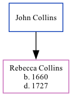

John Collins
[
Home
] | [
Calendar
] | [
Surnames Index
] | [
Family History
]
John Collins
andhad 1 child, Rebecca.
Children
Rebecca
was born in 1660
Family Tree

Generated by
ged2site
. Last updated on Sep 9, 2024